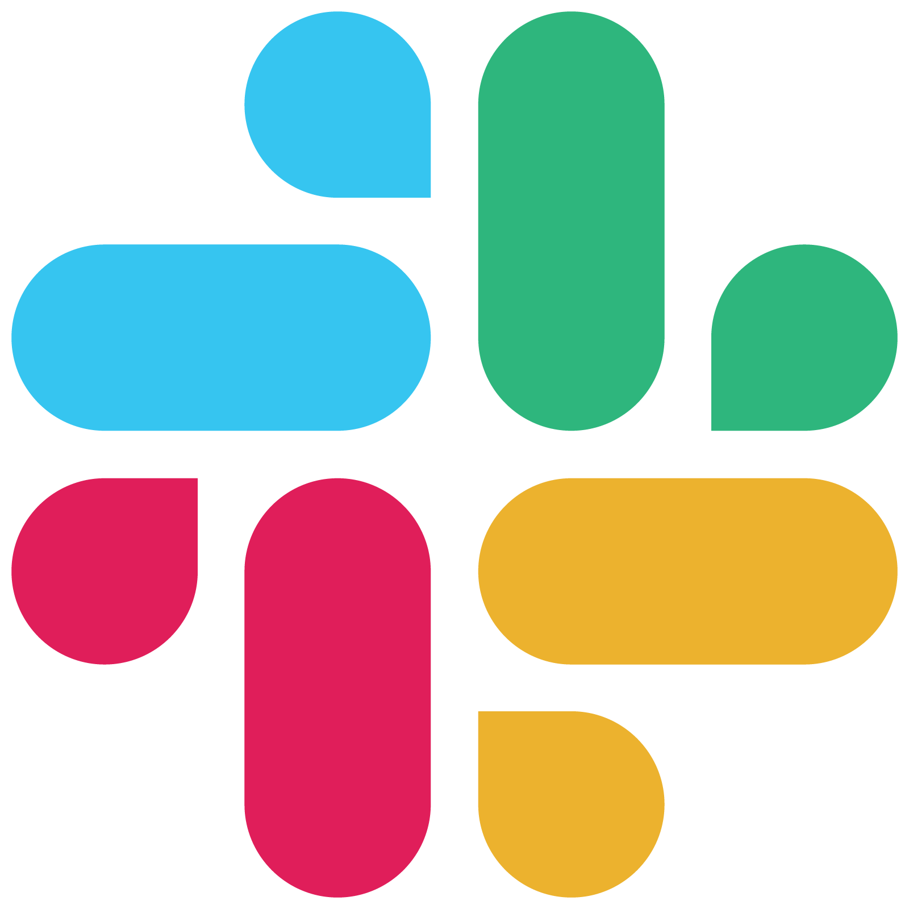

6 Additional tools for collaboration
Below we introduce some web-based tools that you can use to improve collaboration and openness. We present them as a suite of options to consider based on the pros and cons associated with each tool. This is by no means a comprehensive list, but it should get you started towards better collaboration in an open environment.
6.1 Slack

What
An online messaging platform for internal communication. Conversations can be organized by topic (via channels) or you can send direct messages to one or more team members. You can have multiple workspaces for different groups.
Pros
Alleviate email overload through quick, informal messaging. Offers a fresh approach to online communication.
Cons
Yet another thing to monitor. Free subscription limits archive of messages. Communication is limited to those in the same workspace.
6.2 Trello

What
A Kanban style workflow organization platform. Can be used for personal organization or in teams. Card management allows you to assign due dates, add attachments, make checklists, assign tasks to yourself or team members, and label by themes.
Pros
Easy to use and can upgrade with “power-ups” for integration with other services (e.g., Google). Use across locations (e.g., from home or in the office) is easy because it’s based in a web browser.
Cons
Not entirely open because it’s only visible to yourself or those you explicitly invite. Free version is limited to only a handful of “power-ups”.
6.3 Google Drive

What
Cloud-based platform for sharing documents, worksheets, slides, etc. Follows a familiar file-based structure that is common to most operating systems.
Pros
Easy to use and can be a very open space for collaboration. Fairly interoperable with different file formats. Some functionality with version control (i.e., ability to “revert” to previous versions and to view changes).
Cons
Requires a Google account and access can be tricky depending on institution. Even though some versioning is provided, the format can encourage poor file management. Who knows what Google is doing with your data.
6.4 Office 365

https://www.microsoft.com/en-us/microsoft-365
What
Cloud-based platform for secure sharing of Microsoft documents, worksheets, slides, etc.
Pros
Easy to use and fully supports Microsoft products. Low barrier of inclusion to others that are already using Microsoft products.
Cons
Requires a Microsoft account and access can be tricky depending on institution. Maintains dependency on expensive Microsoft products that aren’t reproducible or interoperable. Very often used in closed workflows.
6.5 GitHub

What
Cloud-based platform for sharing code with Git version control. Supports sharing of most file types, although code and text-based files are the primary use.
Pros
Collaborative and fully transparent work environment for files under version control. Supports workflow management through issue tracking and Kanban style project boards. Links to third-party platforms for archiving and DOI generation (e.g., Zenodo). Octocat mascot is super cute.
Cons
Learning curve is steep if you want to fully leverage version control. Not a formal data archival service by itself and file sizes are limited.